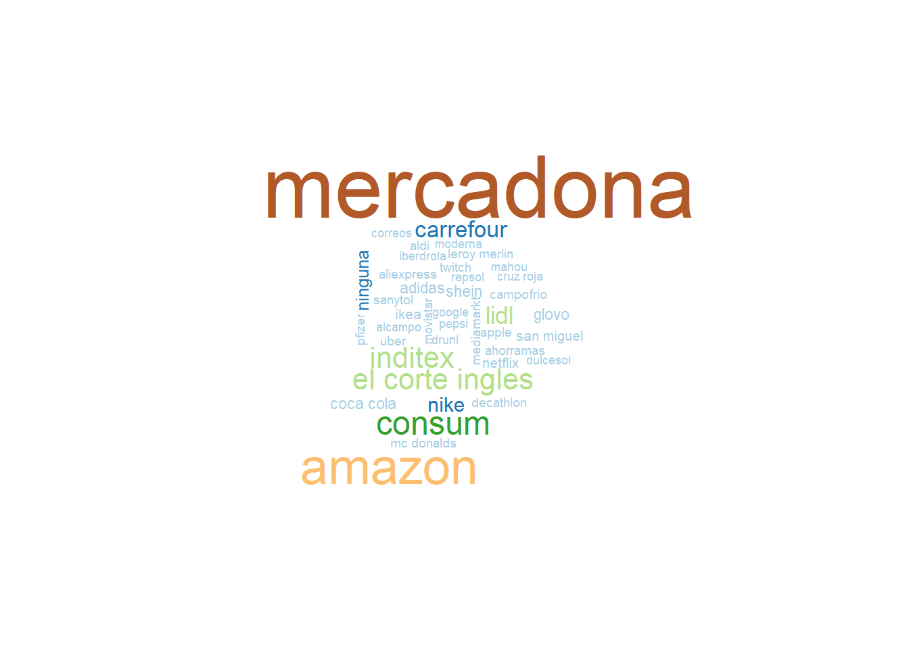

Las empresas y en especial las marcas, han tenido y están teniendo un papel fundamental en el mercado con sus acciones, comunicaciones y el ejercicio de responsabilidad que se les ha exigido.
A tu juicio, enumera las 3 primeras marcas que te vienen a la mente, y que más te han impresionado por sus actividades durante estos últimos meses… [Q00410]

Siguiendo con las actividades de los actores de la sociedad el mercado, ¿cómo valoras la reacción y gestión de la pandemia de las siguientes organizaciones? Utiliza una escala de 1 a 10, donde 1 es muy mala gestión y 10 muy buena gestión. [Q00420]
Y, ¿cómo valoras la reacción y la gestión de la pandemia de cada uno de los siguientes tipos de empresas y sectores? Utiliza de nuevo una escala de 1 a 10, donde 1 es muy mala gestión y 10 muy buena gestión. [Q00430]